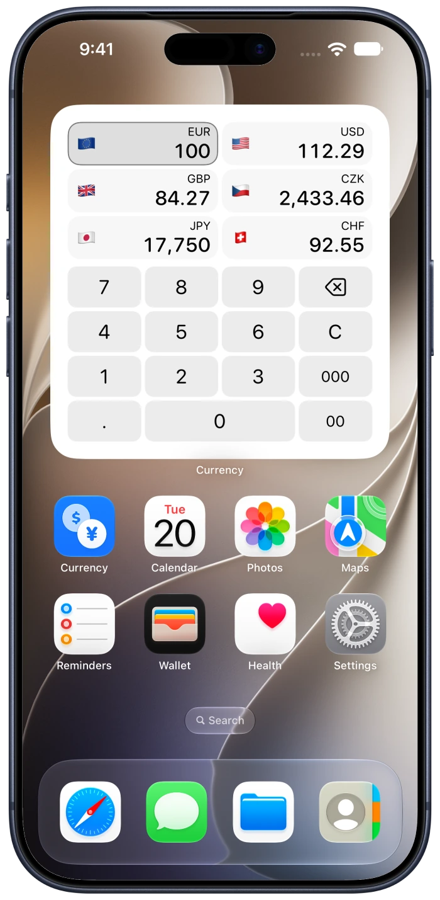
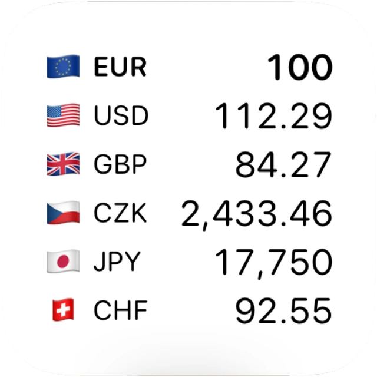
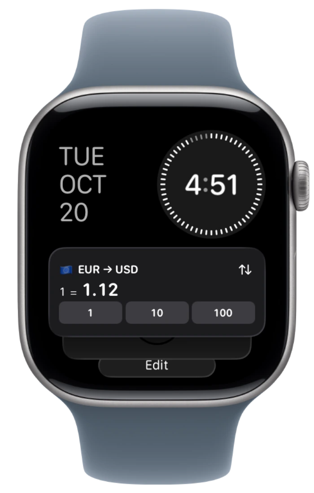
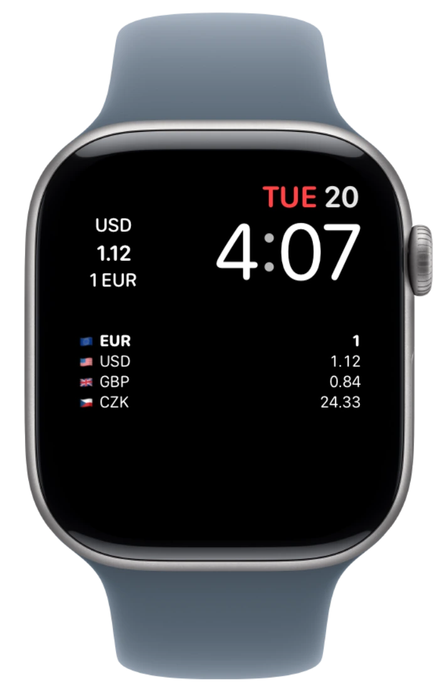

Currency support
Set up your widgets and keep your currencies close.
Add a currency widget on iPhone or iPad
- Touch and hold an empty area of your Home Screen until the apps jiggle.
- Tap Edit, then Add Widget. Find Currency in the widget gallery.
- Choose a widget and size, tap Add Widget, then finish editing your Home Screen.
You can add more than one Currency widget with different currencies and layouts.

Choose your currencies and widget layout
- Touch and hold your Currency widget, then tap Edit Widget.
- Choose the currencies and available options for that widget.
- Tap outside the settings to return to your Home Screen.
For the Calculator widget, tap a currency to use it as the input, then enter an amount with the keypad.
Available settings and sizes depend on the widget you choose.

Add Currency to your Apple Watch Smart Stack
- From your watch face, turn the Digital Crown up to open Smart Stack.
- Scroll to the bottom of the stack, tap Edit, then tap the add button.
- Choose Currency and an available widget, then finish editing.
Keep a rate or available history within reach without opening the Watch app.

Show a currency on your watch face
- Touch and hold your watch face, then tap Edit.
- Swipe to the complications settings and choose an available slot.
- Select Currency, then press the Digital Crown to finish.
Available complication styles depend on the watch face and slot. Install Currency on your Watch if it does not appear in the list.

Quick answers
Why is my widget not updating?
The system controls widget refresh timing. Open Currency with an internet connection to check the rate and its source information. Confirm that the widget has the currencies you want.
How do I use Currency offline?
Open Currency online first to load rates. Offline, you can enter new amounts using saved rates. New rates and missing history need a connection. Check the displayed dates and saved-rate notices.
Does Apple Watch need my iPhone nearby?
The Watch app fetches rates independently when it has a connection and keeps its own saved data. Favorite currencies and metal measurement preferences can sync from your paired iPhone. Entered amounts and rate caches do not sync to the Watch.
Where do the rates and charts come from?
Rates and history are reference estimates. Coverage and update times depend on the source. Open a currency’s details for its history and source information.
Get in touch
For a bug, question or idea, use Settings → Help → Feedback in Currency, or email us.
dimasike.dev@gmail.comInclude your device, OS version, Currency version and the steps that led to the issue. Remove personal information from screenshots before sending.
GitHub
Browse the source or report an issue.
GitHub reports are public. Use email for a private support request.